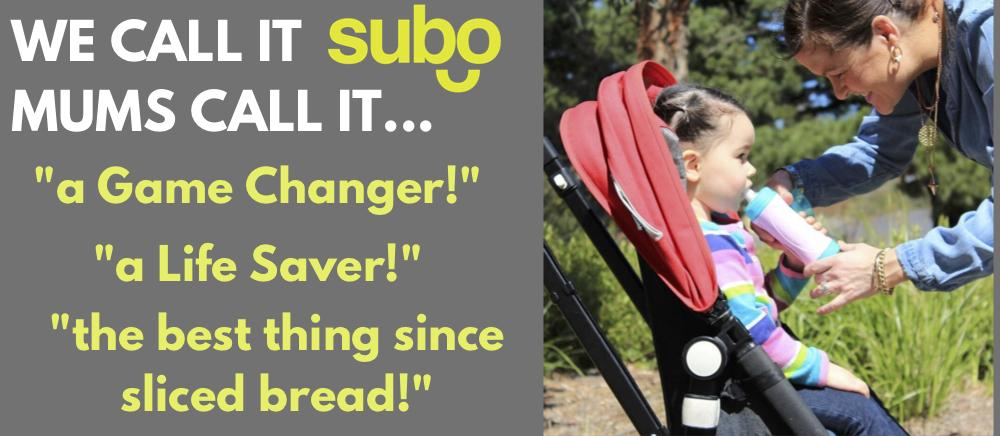

Witajcie na stronie z najfajniejszymi gadzetami dla dzieci! :)
Ile razy podawaliście dzieciom pokarmy w postaci musu i musieliście trzymać tubkę i kontrolować sytuację
aby jej zawartość nie wyleciała na dziecko?! ;p milion?? :D za kazdym razem?! Ja przyznam szczerze, ze tak..
Ale do pewnego momentu- gdy zaczełam podawać dziecku musy z
SUBO BOTTLE!

SUBO BOTTLE- Dostępne kolory